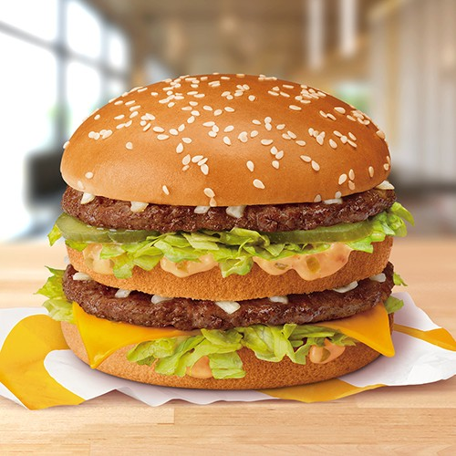
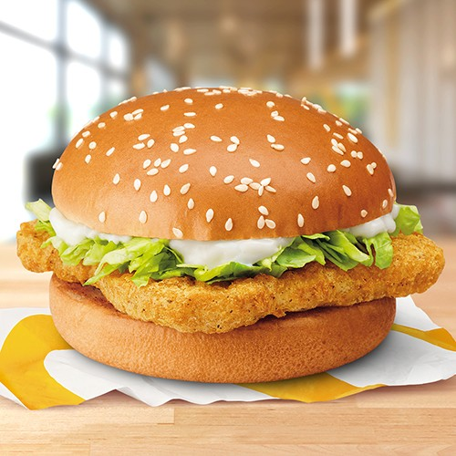
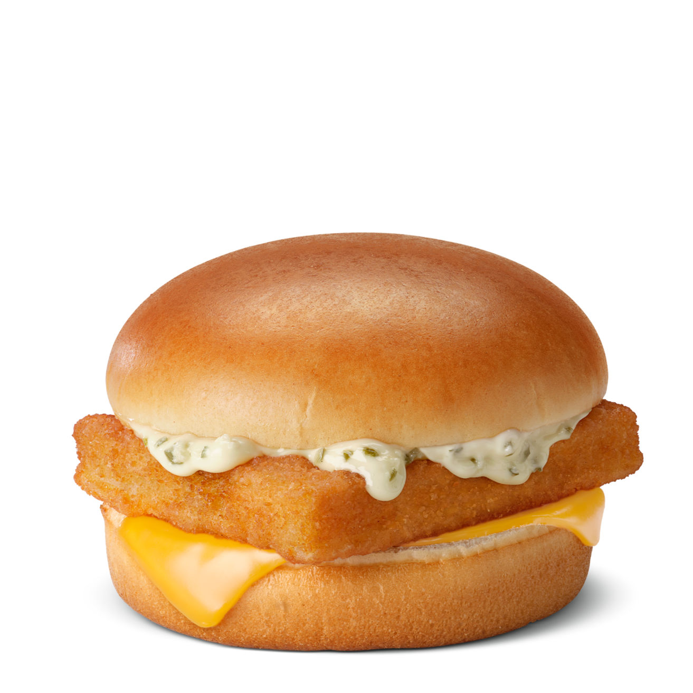
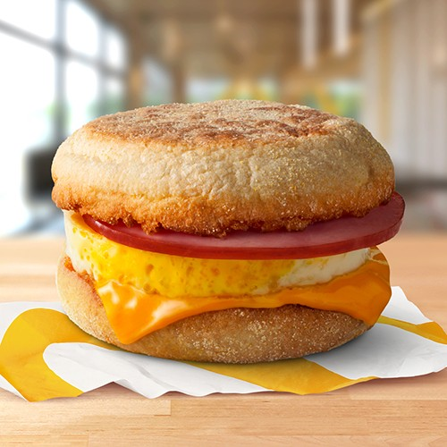
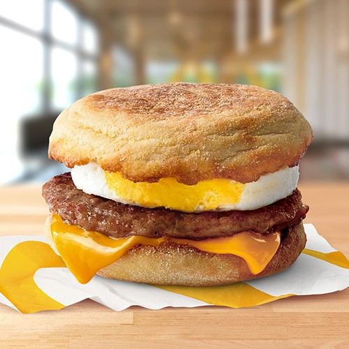
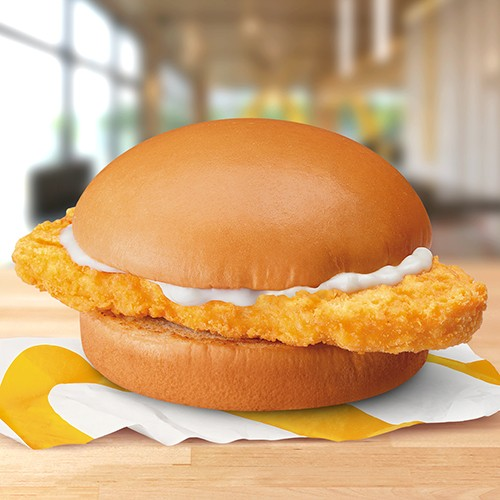
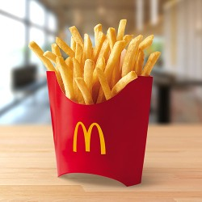
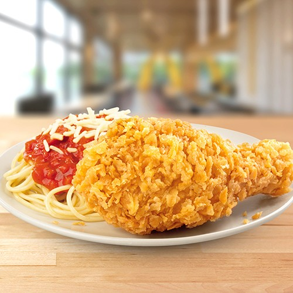
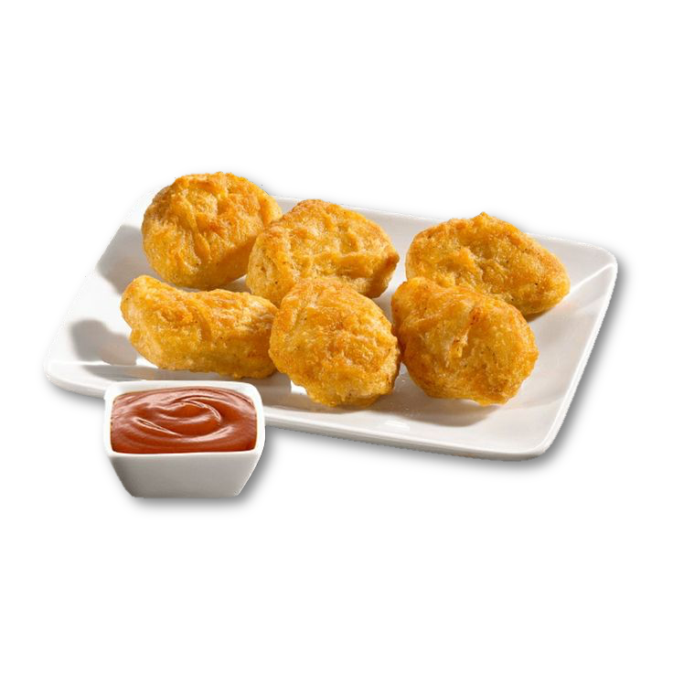

The Big Mac is a double-layered burger with two beef patties, lettuce, cheese, pickles, onions, and the signature Big Mac sauce. Sandwiched between a three-part sesame seed bun, it’s one of the most recognizable fast-food burgers in the world. The sauce adds a tangy twist that complements the other ingredients perfectly. It’s been a favorite for decades, loved for its unique and satisfying taste.

This burger features a thick quarter-pound beef patty, melted cheese, pickles, onions, mustard, and ketchup on a sesame seed bun. Its rich beefy flavor makes it a hearty and satisfying meal. The combination of condiments creates a perfect balance of tangy, salty, and savory. It’s ideal for those who enjoy a meaty, no-frills burger.

This sandwich combines a crispy chicken patty with fresh lettuce and creamy mayonnaise on a soft bun. Its simplicity makes it a reliable choice for chicken lovers. The crunchy chicken contrasts perfectly with the smooth mayo, creating a satisfying bite. It’s a straightforward, tasty option for a quick meal.

The Filet-O-Fish features a flaky fish fillet topped with tangy tartar sauce and melted cheese in a steamed bun. Its mild flavor makes it a great alternative to beef or chicken. It’s particularly popular during Lent, when seafood is in high demand. This classic has been a staple on the menu for decades.

This popular breakfast item is quick, filling, and delicious. It's a breakfast classic with a freshly cracked egg, Canadian bacon, and melted cheese on an English muffin. It’s a simple yet satisfying way to kickstart the day. The warm, toasted muffin complements the hearty egg and bacon flavors.

A sausage patty, fresh egg, and slice of cheese come together in this protein-packed breakfast sandwich. Served on a toasted English muffin, it’s a flavorful and hearty option. The savory sausage adds a rich, meaty taste that pairs perfectly with the creamy cheese and egg. It’s a go-to choice for mornings on the go.

A McDonald's Cheeseburger features a beef patty topped with melted cheese, pickles, onions, ketchup, and mustard on a soft bun. It’s a simple, classic burger that’s been a go-to for many customers. Its smaller size makes it perfect for a quick bite or light meal. Despite its simplicity, it’s packed with savory flavors that are instantly satisfying.

The Double Cheeseburger takes the classic cheeseburger up a notch with two beef patties and two slices of melted cheese. It’s layered with pickles, onions, ketchup, and mustard, making every bite flavorful. The extra meat and cheese make it a heartier choice for bigger appetites. It’s a great balance of McDonald’s signature flavors in one sandwich.

The McCrispy is a crispy, juicy chicken sandwich served with lettuce and creamy mayonnaise on a soft, toasted bun. Its crunchy chicken filet is perfectly seasoned, making it a satisfying choice for chicken lovers. The simplicity of its ingredients lets the flavor of the chicken shine. It’s a classic, reliable option for a quick and filling meal.

McDonald’s French Fries are golden, thin, and perfectly salted, making them a global favorite. Made from quality potatoes, they’re cooked until crispy on the outside and soft inside. Whether as a side dish or snack, they pair well with burgers, nuggets, or even on their own. Their addictively delicious taste keeps customers coming back for more.

This meal includes a crispy, juicy fried chicken piece served with a steaming cup of white rice. The chicken is golden and flavorful, with a crunch that complements the fluffy rice. It’s perfect for those who enjoy a hearty and comforting rice meal. Popular in markets like the Philippines, it’s a go-to option for chicken and rice lovers.

The McCrispy Chicken Fillet is a crispy, seasoned chicken fillet paired with steamed white rice. Often served with a savory gravy on the side, it’s a flavorful and budget-friendly choice. The crispy texture of the chicken contrasts well with the soft rice, satisfying every bite. It’s a simple yet delicious meal perfect for rice lovers.

This combo meal offers a piece of crispy Chicken McDo, McSpaghetti, and a side of rice. It’s a feast for those who want the best of both worlds: crispy chicken, sweet-style spaghetti, and rice. The flavors complement each other, providing a unique dining experience. This meal is particularly loved in markets like the Philippines.

Chicken McNuggets are crispy, golden-brown, bite-sized pieces of seasoned chicken. They’re great for dipping, with sauces like barbecue, sweet and sour, or honey mustard adding to their appeal. Popular among both kids and adults, they’re a fun and shareable snack. Their crunchy coating and juicy interior make them consistently delicious.